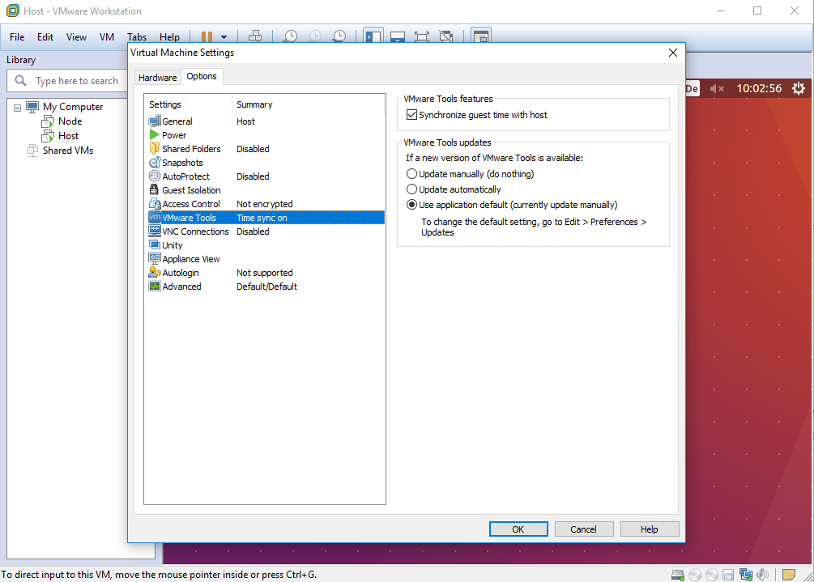

Server Vorbereitung
Video Tutorial
Als gegeben wird eine Ubuntu VM 16.04, befindlich in:
E:\VM\LV-Reichelt\IMAGES\Ubuntu16.04
und eine Umgebung zum Einrichten/Starten der virtuellen Maschine vorausgesetzt. (z.B.: VM Workstation 12 Pro)
Für das Beispiel in VM Workstation 12 Pro öffnen sie die VM und vergeben sie einen Namen (z.B.: ServerVM) und wählen Sie einen Pfad als Ablageort aus.
VM starten
Starten sie die VM und loggen Sie sich in den Studentenaccount ein.
Systemuhr synchronisieren
Um spätere Fehler zu vermeiden, müssen Sie die Systemuhr der VM auf die des Hostsystems snchronisieren. In VM Workstation 12 Pro geht dies wie folgt:
- Rechtsklick auf die VM im linken Anzeigefeld.
- Tab Optionen -> VMware Tools
- Haken bei synchronize guest time with host setzen

Proxy anpassen
Der Host benötigt eine stabile Internetverbindung. Da sich in der oben genannten VM noch ein Fehler befindet, passen sie bitte die Datei /etc/environment an indem sie folgende Befehle ausführen:
sudo gedit /etc/environment
Ersetzen Sie folgende Zeile
https_proxy="https://www-cache.htw-dresden.de"
durch die folgende:
https_proxy="http://www-cache.htw-dresden.de"
Speichern und schließen sie das Dokument. Geben Sie abschließend folgenden Befehl ein:
source /etc/environment
Herunterladen des Chef DK
Geben Sie folgende Befehle in ein Terminal ein
cd ~
wget https://packages.chef.io/files/stable/chefdk/2.4.17/ubuntu/16.04/chefdk_2.4.17-1_amd64.deb
Installieren Sie es anschließend über den Befehl:
sudo dpkg -i chefdk_2.4.17-1_amd64.deb
Mögliche Fehler:
Falls sie folgende Fehlermeldung erhalten:
 Geben Sie folgende Befehle ein:
Geben Sie folgende Befehle ein:
sudo rm /var/lib/dpkg/lock
sudo dpkg --configure -a
Falls dies nicht funktioniert, starten Sie die VM neu.
Git installieren
Die Versionierung der Chef Kochbücher erfolgte in Git. Dazu installieren sie sich bitte folgendes Program bei geöfnetem Terminal:
sudo apt-get install git --yes
Mögliche Fehler:
Falls sie folgende Fehlermeldung erhalten:
Geben Sie folgende Befehle ein:
sudo rm /var/lib/dpkg/lock
sudo dpkg --configure -a
Anschließend sollte die Installation reibungslos verlaufen.